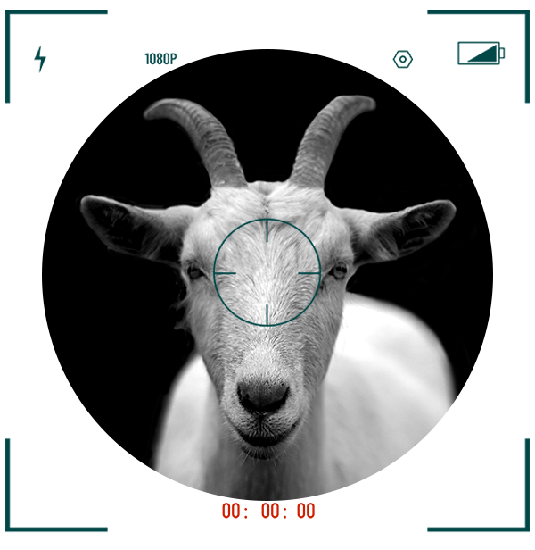

About Goat Motion
In the dynamic realm of multimedia and animation, the genesis of Goat Motion epitomizes the journey of an individual from humble beginnings to entrepreneurial success. Founded by Anuj Singh, a graduate from Kurukshetra University with a specialization in graphics and animation, Goat Motion has emerged as a prominent player in the industry, serving a diverse clientele with an array of multimedia services. Story of Goat Motion finds its roots in Anuj Singh's collegiate years, where a passion for graphics and animation ignited a spark of creativity and ambition. During his time at Kurukshetra University, Anuj began to take on local projects for events and gatherings, leveraging his skills to deliver high-quality work that garnered attention and praise. As Anuj continued to excel in his craft, the demand for his services grew, leading to a steady stream of local projects and opportunities. It wasn't long before Anuj realized the potential to turn his passion into a profession, and thus began his journey into the world of freelancing. Following graduation, armed with a degree in graphics and animation and a portfolio of successful projects, Anuj wasted no time in setting up freelance accounts on various platforms. This move proved to be pivotal as it opened doors to a wider audience and allowed Anuj to showcase his talents on a global scale.
Addition to freelancing, Anuj sought employment in corporate settings to gain valuable industry experience and insights. Over the course of four years, Anuj worked diligently in various companies, honing his skills, expanding his knowledge, and building relationships with clients and colleagues alike. However, amidst the hustle and bustle of corporate life, Anuj harbored a dream- the dream of creating something of his own, a platform where he could unleash his creativity and cater to clients in his own unique way. Thus, Goat Motion was born. Established with a vision to offer comprehensive multimedia services, Goat Motion quickly gained traction in the industry. With a diverse skill set encompassing video production, editing, 3D product design, motion graphics, animations, graphic design, and branding, Goat Motion positioned itself as a one-stop solution for clients seeking top-notch multimedia solutions. Today, Goat Motion stands as a testament to Anuj Singh's unwavering dedication, entrepreneurial spirit, and commitment to excellence. From its humble beginnings as a college graduate with a passion for graphics and animation to its current status as a thriving multimedia company serving international clients, Goat Motion continues to push boundaries, innovate, and inspire.
As Anuj Singh leads Goat Motion into the future, the company remains grounded in its founding principles of creativity, integrity, and client satisfaction. With each project undertaken, Goat Motion reaffirms its position as a leader in the ever-evolving landscape of multimedia and animation, leaving an indelible mark on the industry and paving the way for future generations of aspiring entrepreneurs.